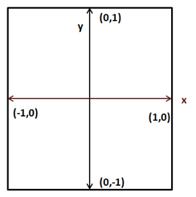
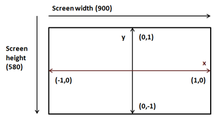
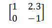
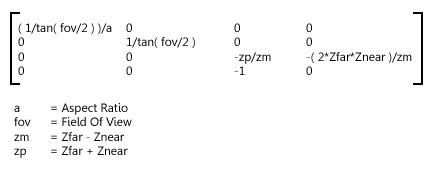
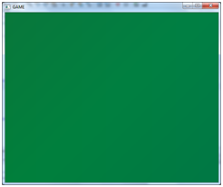
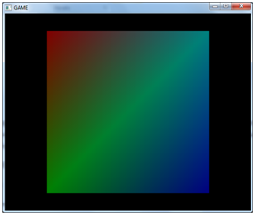

变换（Transformations）
投影
让我们看到在前一章中创建的漂亮的彩色的正方形。如果仔细看，它更像一个矩形，你甚至可以将窗口的宽度从600像素改为900像素，失真就会更加明显。这发生了什么事呢？
如果你观察顶点着色器的代码，我们只是直接地传递坐标。换句话说，当一个顶点的X坐标为0.5时，我们对OpenGL说在屏幕的X坐标为0.5的位置绘制它。下图是OpenGL坐标（仅含X和Y轴）。

将这些坐标投影到窗口坐标，需要考虑到窗口的大小。因此，如果我们的窗口大小为900x480，OpenGL坐标(1, 0)将被投影到窗口坐标(900, 0)，最终创建一个矩形而不是一个正方形。

但是，问题远比这更严重。在0.0到1.0和-1.0之间修改正方形的坐标，你看到了什么？正方形是完全绘制在同一个地方，不管它是否沿着Z轴位移。为什么会发生这种情况？远处的物体应该比近处的物体小，但是我们使用相同的X和Y坐标绘制它们。
但是，等等。这不应该用Z坐标来处理吗？这是正确的但是又不正确。Z坐标告诉OpenGL对象的远近，但是OpenGL对你的对象的大小一无所知。你可以有两个不同大小的物体，一个更近更小，一个更远更大，而且可以以相同的大小正确地投影到屏幕上（有相同的屏幕X和Y坐标，但Z坐标不同）。OpenGL只使用我们正在传递的坐标，所以必须处理这个问题。我们需要正确地投影坐标。
既然已经确诊了这个问题，我们该怎么做？答案是使用投影矩阵（Projection Matrix）或截锥体（Frustum）。投影矩阵将处理绘制区域的宽高比（宽度和高度的关系），因此物体不会被扭曲。它也将处理距离，所以较远的物体将会被绘制得更小。投影矩阵还将考虑我们的视野和应该显示的最大距离有多远。
对于不熟悉矩阵的人，矩阵（Matrix）是以行和列排列的二维数组。矩阵中的每个数字被称为元素。矩阵阶次是行和列的数量。例如，这里是一个2x2矩阵（有2行2列）。

矩阵有许多可以使用的基本运算法则（如加法、乘法等），你可以在任何数学书中查阅它们。与三维图形相关的矩阵对空间中点的变换非常有用。
你可以把投影矩阵想象成一个摄像机，它有一个视野和最小和最大距离。该摄像机的可视区域是一个截断的金字塔。下图展示了该区域的俯视图。

投影矩阵将正确地投影三维坐标，以便它们能够在二维屏幕上正确地显示。该矩阵的数学表示如下（不要害怕）:

其中屏幕宽高比（Aspect Ratio）指的是屏幕宽度与屏幕高度的关系（）。为了获得给定点的投影坐标，我们只需要将投影矩阵乘以原始坐标，结果将是投影后的另一个向量。
因此我们需要处理一组数学对象，如向量、矩阵，并要可以对它们进行操作。我们可以选择从头开始编写所有的代码，或者使用已经实现的库。当然我们会选择容易的方法，使用JOML（Java OpenGL Math Library）处理LWJGL内的数学运算。为了使用该库，我们只需要为pom.xml文件添加另一个依赖项。
<dependency>
<groupId>org.joml</groupId>
<artifactId>joml</artifactId>
<version>${joml.version}</version>
</dependency>
然后设定使用的库版本。
<properties>
[...]
<joml.version>1.9.6</joml.version>
[...]
</properties>
现在一切都完事了，让我们创建我们的投影矩阵吧。在Renderer类中创建Matrix4f类（由JOML库提供）的实例。Matrix4f类提供了一个perspective方法来创建投影矩阵。该方法需要以下参数：
- 视野：可视区域的弧度角大小。我们将定义一个储存该值的常数。
- 屏幕宽高比。
- 最近视距（z-near）。
- 最远视距（z-far）。
我们将在init方法中实例化该矩阵，因此需要将引用传递给Window实例以获得窗口大小（你可以在源代码看到它）。代码如下：
/**
* Field of View in Radians
*/
private static final float FOV = (float) Math.toRadians(60.0f);
private static final float Z_NEAR = 0.01f;
private static final float Z_FAR = 1000.f;
private Matrix4f projectionMatrix;
投影矩阵的创建如下所示：
float aspectRatio = (float) window.getWidth() / window.getHeight();
projectionMatrix = new Matrix4f().perspective(FOV, aspectRatio,
Z_NEAR, Z_FAR);
现在我们忽略宽高比可以改变（通过调整窗口大小）。这可以在render方法中检查并相应地改变投影矩阵。
现在有了矩阵，我们如何使用它呢？我们需要在着色器中使用它，并且它应该被应用到所有顶点上。首先，你可能会想到把它捆绑在顶点输入中（就像坐标和颜色那样）。但这样，我们会浪费很多空间，因为投影矩阵在几次渲染期间都不会发生改变。你可能还想在Java代码中用矩阵处理所有顶点。但是，这样我们输入的VBO就是没用的了，这样就不能使用显卡中的处理器资源了。
答案是使用“uniform”。Uniform是着色器可以使用的全局的GLSL变量，我们将使用它与着色器交流。
所以我们需要修改顶点着色器的代码，并声明一个新的称为projectionMatrix的全局变量，并用它来计算投影位置。
#version 330
layout (location=0) in vec3 position;
layout (location=1) in vec3 inColour;
out vec3 exColour;
uniform mat4 projectionMatrix;
void main()
{
gl_Position = projectionMatrix * vec4(position, 1.0);
exColour = inColour;
}
如上所述，我们把projectionMatrix定义为一个4x4的矩阵，新的坐标是通过把它与原始坐标相乘得到的。现在我们需要把投影矩阵的值传递给着色器。首先，我们需要确定全局变量的位置。
这是通过调用方法glGetUniformLocation完成的，它有两个参数：
- 着色器程序的ID
- 全局变量名（它应该与着色器里定义的名称相同）
此方法返回储存全局变量的ID。由于我们可能有一个以上的全局变量，我们将把这些ID储存在由变量名作为索引的Map中（稍后我们需要那个ID）。因此，在ShaderProgram需要创建一个新的字段来保存这些ID：
private final Map<String, Integer> uniforms;
然后由构造方法初始化它：
uniforms = new HashMap<>();
最后，我们创建一个方法来获得全局变量储存的位置。
public void createUniform(String uniformName) throws Exception {
int uniformLocation = glGetUniformLocation(programId,
uniformName);
if (uniformLocation < 0) {
throw new Exception("Could not find uniform:" +
uniformName);
}
uniforms.put(uniformName, uniformLocation);
}
现在在着色器程序编译后，我们就可以在Renderer类中调用createUniform方法（现在我们投影矩阵实例化后就调用它）。
shaderProgram.createUniform("projectionMatrix");
现在，我们已经准备好一个可以储存投影矩阵数据的储存器。由于投影矩阵在渲染期间不会改变，所以可以在创建后直接设置值。但是我们将在render方法中做这件事。稍后你可以看到，我们可以重用该全局变量来做额外的事情，这些事情需要在每次渲染调用中完成。
我们将在ShaderProgram类中创建另一个方法来设置数据，称为setUniform。我们通过使用JOML库提供的实用方法将矩阵转换成4x4的FloatBuffer对象，并将它们发送到全局变量中。
public void setUniform(String uniformName, Matrix4f value) {
// Dump the matrix into a float buffer
try (MemoryStack stack = MemoryStack.stackPush()) {
FloatBuffer fb = stack.mallocFloat(16);
value.get(fb);
glUniformMatrix4fv(uniforms.get(uniformName), false, fb);
}
}
正如你看到的，我们以不同的方式创建缓冲区。我们使用的是自动管理缓冲区，并将它们分配到堆栈上。这是因为这个缓冲区是大小很小，而且它在本方法外不被使用。因此，我们使用MemoryStack类。
现在，在着色器绑定之后，Renderer类中的render方法可以使用该方法。
shaderProgram.setUniform("projectionMatrix", projectionMatrix);
我们快要完成了。现在我们可以正确地渲染正方形。所以现在可以启动你的程序，然后得到一个...黑色背景上没有任何彩色正方形。发生了什么？我们弄糟了什么吗？实际上没有任何问题。记住我们正在模拟摄像机观察场景的效果。我们提供了两个距离，一个是最远视距（1000f）和一个最近视距（0.01f）。而我们的坐标是：
float[] positions = new float[]{
-0.5f, 0.5f, 0.0f,
-0.5f, -0.5f, 0.0f,
0.5f, -0.5f, 0.0f,
0.5f, 0.5f, 0.0f,
};
也就是说，我们坐标中的Z坐标在可视区域之外。给它们赋值为-0.05f。现在你会看到像这样的一个巨大的绿色矩形：

这是因为，我们正绘制出离摄像机机太近的正方形。我们实际上是在放大它。如果现在把一个-1.05f的值赋值给Z坐标，就可以看到彩色正方形了。

如果继续向后移动正方形，我们会看到它变小了。还要注意到正方形不再像矩形了。
使用变换
让我们回想一下到目前为止我们都做了什么。我们已经学会了如何将数据以有效的格式传递给显卡，以及如何使用顶点和片元着色器来投影这些顶点并设置它们的颜色。现在应该开始在三维空间中绘制更复杂的模型了。但为了做到这件事，我们必须能够加载模型，并在指定的位置以适当的大小和所需的旋转将它渲染在三维空间中。
现在为了实现这种渲染，我们需要提供一些基本操作来操作模型：
- 移动(
translation): 在三个轴中的任意一个轴上移动一个物体。 - 旋转(
Rotation): 按任意一个轴旋转物体任意角度。 - 缩放(
Scale): 调整物体的大小。

上面的操作统称为变换（Transformation）。你可能猜到要实现这一点的方法是把坐标乘以一组矩阵（一个用于移动，一个用于旋转，一个用于缩放）。这三个矩阵将被组合成一个称为“世界矩阵”的矩阵，并作为一个全局变量传递给顶点着色器。
之所以被称为世界矩阵是因为我们正在从模型坐标转换为世界坐标。当学习加载3D模型时，你会发现这些模型是在它们自己的坐标系中定义的。它们不知道你的三维空间的大小，但它们需要在里面渲染。因此，当我们用矩阵乘以坐标时，实际上做的是从一个坐标系（模型坐标系）转换到另一个坐标系（三维世界坐标系）。
世界矩阵应该这样计算（顺序很重要，因为乘法交换律不适用于矩阵）:
如果把投影矩阵包含在变换矩阵中，它会是这样的：
变换矩阵是这样的：
位移矩阵参数如下：
- dx: 沿X轴位移。
- dy: 沿Y轴位移。
- dz: 沿Z轴位移。
缩放矩阵是这样定义的；
缩放矩阵参数如下：
- sx: 沿着X轴缩放。
- sy: 沿着Y轴缩放。
- sz: 沿着Z轴缩放。
旋转矩阵要复杂得多，但请记住，它可以由每个绕单独的轴旋转的旋转矩阵相乘得到。
现在，为了实践这些理论，我们需要重构代码一点点。在游戏中，我们将加载一组模型，用来根据游戏逻辑在不同的位置渲染许多对象（想象一个FPS游戏，它载入了三个不同敌人的模型。确实只有三个模型，但使用这些模型，我们可以渲染想要的任意数量的敌人）。我们需要为每个对象创建一个VAO和一组VBO吗？答案是否定的，只需要每个模型加载一次就行。我们需要做的是根据它的位置，大小和旋转来独立绘制它。当渲染这些模型时，我们需要对它们进行变换。
因此，我们将创建一个名为GameItem的新类，该类将模型加载到Mesh实例中。一个GameItem实例将由变量储存它的位置、旋转状态和大小。这个就是这个类的定义。
package org.lwjglb.engine;
import org.joml.Vector3f;
import org.lwjglb.engine.graph.Mesh;
public class GameItem {
private final Mesh mesh;
private final Vector3f position;
private float scale;
private final Vector3f rotation;
public GameItem(Mesh mesh) {
this.mesh = mesh;
position = new Vector3f(0, 0, 0);
scale = 1;
rotation = new Vector3f(0, 0, 0);
}
public Vector3f getPosition() {
return position;
}
public void setPosition(float x, float y, float z) {
this.position.x = x;
this.position.y = y;
this.position.z = z;
}
public float getScale() {
return scale;
}
public void setScale(float scale) {
this.scale = scale;
}
public Vector3f getRotation() {
return rotation;
}
public void setRotation(float x, float y, float z) {
this.rotation.x = x;
this.rotation.y = y;
this.rotation.z = z;
}
public Mesh getMesh() {
return mesh;
}
}
我们将创建一个名为Transformation的类，让它来处理变换。
package org.lwjglb.engine.graph;
import org.joml.Matrix4f;
import org.joml.Vector3f;
public class Transformation {
private final Matrix4f projectionMatrix;
private final Matrix4f worldMatrix;
public Transformation() {
worldMatrix = new Matrix4f();
projectionMatrix = new Matrix4f();
}
public final Matrix4f getProjectionMatrix(float fov, float width, float height, float zNear, float zFar) {
float aspectRatio = width / height;
projectionMatrix.identity();
projectionMatrix.perspective(fov, aspectRatio, zNear, zFar);
return projectionMatrix;
}
public Matrix4f getWorldMatrix(Vector3f offset, Vector3f rotation, float scale) {
worldMatrix.identity().translate(offset).
rotateX((float)Math.toRadians(rotation.x)).
rotateY((float)Math.toRadians(rotation.y)).
rotateZ((float)Math.toRadians(rotation.z)).
scale(scale);
return worldMatrix;
}
}
正如你所看到的，这个类把投影矩阵和世界矩阵结合起来。给定一组参数来进行位移、旋转和缩放，然后返回世界矩阵。getWorldMatrix返回的结果将为每个GameItem实例转换坐标。该类还提供了获得投影矩阵的方法。
需要注意的一件事是，Matrix4f类的mul方法修改了该实例的内容。因此，如果直接将投影矩阵与变换矩阵相乘，我们会修改投影矩阵本身。这就是为什么总是在每次调用时将每个矩阵初始化为单位矩阵。
在Renderer类的构造方法中，我们仅实例化了没有任何参数的Transformation类，而在init方法中，我们只创建了Uniform。
public Renderer() {
transformation = new Transformation();
}
public void init(Window window) throws Exception {
// .... Some code before ...
// Create uniforms for world and projection matrices
shaderProgram.createUniform("projectionMatrix");
shaderProgram.createUniform("worldMatrix");
window.setClearColor(0.0f, 0.0f, 0.0f, 0.0f);
}
在Renderer类的渲染方法中，现在可以接收到一个GameItem的数组：
public void render(Window window, GameItem[] gameItems) {
clear();
if ( window.isResized() ) {
glViewport(0, 0, window.getWidth(), window.getHeight());
window.setResized(false);
}
shaderProgram.bind();
// Update projection Matrix
Matrix4f projectionMatrix = transformation.getProjectionMatrix(FOV, window.getWidth(), window.getHeight(), Z_NEAR, Z_FAR);
shaderProgram.setUniform("projectionMatrix", projectionMatrix);
// Render each gameItem
for(GameItem gameItem : gameItems) {
// Set world matrix for this item
Matrix4f worldMatrix =
transformation.getWorldMatrix(
gameItem.getPosition(),
gameItem.getRotation(),
gameItem.getScale());
shaderProgram.setUniform("worldMatrix", worldMatrix);
// Render the mes for this game item
gameItem.getMesh().render();
}
shaderProgram.unbind();
}
每次调用render时就更新投影矩阵一次。这样，我们可以处理窗口大小的调整。然后，我们遍历GameItem数组，并根据它们各自的位置、旋转和大小创建变换矩阵。这个矩阵将被传递到着色器并绘制Mesh。投影矩阵对于所有要渲染的项目都是相同的。这就是为什么它在Transformation类中是单独一个变量的原因。
我们将渲染代码移动到Mesh类中。
We moved the rendering code to draw a Mesh to this class:
public void render() {
// 绘制Mesh
glBindVertexArray(getVaoId());
glEnableVertexAttribArray(0);
glEnableVertexAttribArray(1);
glDrawElements(GL_TRIANGLES, getVertexCount(), GL_UNSIGNED_INT, 0);
// 重置状态
glDisableVertexAttribArray(0);
glDisableVertexAttribArray(1);
glBindVertexArray(0);
}
顶点着色器只需简单地添加一个新的worldMatrix变量，然后用它与projectionMatrix一同计算坐标：
#version 330
layout (location=0) in vec3 position;
layout (location=1) in vec3 inColour;
out vec3 exColour;
uniform mat4 worldMatrix;
uniform mat4 projectionMatrix;
void main()
{
gl_Position = projectionMatrix * worldMatrix * vec4(position, 1.0);
exColour = inColour;
}
正如你所看到的，代码完全一样。我们使用Uniform来正确地计算坐标，并且考虑截锥、位置、大小和旋转等。
另外一个重要的问题是，为什么不使用位移、旋转和缩放矩阵，而是把它们组合成一个世界矩阵？原因是我们应该尽量减少在着色器中使用的矩阵。还要记住，在着色器中所做的矩阵乘法是每个顶点一次。投影矩阵在渲染调用期间不会改变，而每一个GameItem实例的世界矩阵也不会改变。如果我们独立位移、旋转和缩放矩阵，我们要做更多的矩阵乘法运算。想象一个有超多顶点的模型，这是很多余的操作。
但你现在可能会想，如果每个GameItem中的世界矩阵都不会发生变化，为什么不在Java类中做矩阵乘法？我们将投影矩阵和世界矩阵与每个GameItem相乘，把它们作为一个Uniform，这种情况下，我们确实能节省更多的操作。但是，当我们向游戏引擎中添加更多的特性时，我们需要在着色器中使用世界坐标，所以最好以独立的方式处理这两个矩阵。
最后只需要修改一下DummyGame类，创建一个GameItem实例，让其与Mesh关联，并添加一些操作来位移，旋转和缩放正方形。因为这只是个测试示例，所有没有添加太多，你可以在本书的源代码中找到相关内容。